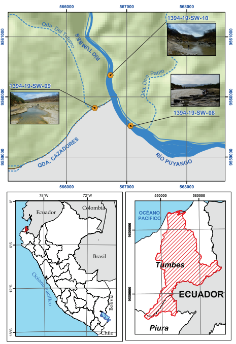

Inspección técnica de línea base geoambiental de la cuenca del río Puyango-Tumbes (lado peruano). Región Tumbes
Geoenvironmental Base Line Inspection of River Puyango-Tumbes (peruvian side) that allows determinated that source of heavy metals come from Puyango in Ecuador.
By A. Otiniano, M.Carrasco, I. Becerra, M. Huaripata, J.Ortiz & J.Andrade in Research
June 1, 2020
Figure 2. Study Zone of the Technical Inspection
Alternative Figure 2
Figure 2. Study Zone between Puyango river and Tumbes River
Abstract
Objective
Carry out the initial geoenvironmental assessment of the quality of surface water resources in the basin of the River Tumbes, in attention to Official Letter No. 045 - 2019 / REGIONAL GOVERNMENT OF TUMBES - GR.
Methodology
The analysis start with the Unit Puyango-Tumbes river (peruvian side) (UHT), in regional scale and with 4 steps: Information gathering, Data Base, Analysis and Interpretation.
Information gathering used old and new documentation of the zone relate to geoenviromental studies, the data base was filled with field data relate to physico-chemical parameters and geological settings, plus the laboratory data from ALS LS Perú S.A.C. Analysis and interpretation used Exploratory Data Analysis (AED) for hydrochemical data and for quality water resource the ECAs from Perú plus the Hazard Quantitive (HQ), finally Quality Index (QI) from ANA ( https://www.gob.pe/ana).
Results
-
The characterization based on the predominant ions and their relationship with salinity in natural waters (Gibbs) shows that the characteristics of the predominant ions in the water are related to the water-rock interaction (heavy metals are not considered), unlike those that are towards the mouth (1394-19-SW-19 and 1394-19-SW-18) whose characteristics are found associated with evapotranspiration and marine intrusion.
-
The presence of heavy metals and / or elements above the reference value established by the environmental quality standards, is NOT related to geogenetic sources (geological characteristics), these characteristics are associated with the anthropic activity present in the area (wastewater domestic and industrial, use of pesticides among others) and at the head of the basin (artisanal mining activity in Ecuador).
-
Stations where there are no significant anthropic activities and whose channels are not related to the Puyango River, such as samples 1394-19-SW-09 (Cazaderos) and 1394-19-SW-04, 1394-19-SW-03 (Cabuyal) have ideal physical-chemical characteristics and lower concentrations of dissolved and total elements.
-
The presence of higher concentrations of heavy and / or toxic elements are observed in the samples taken in the riverbed of the Puyango and Tumbes rivers (Peru - Ecuador limit), these high concentrations persist until the 1394-19-SW-06 station where, according to studies carried out in Ecuador show that the impact of artisanal mining activity has only just begun to diminish its approximate level in the Naranjos area (Ministry of Energy and Mines of Ecuador, 2000).
-
The analysis of the environmental quality index (ICA) shows that the persistent elements in high concentrations over time are Aluminum, Iron, Lead, Arsenic, Manganese and Antimony.
-
The descriptive statistical analyzes of measures of central tendency show that, in most of the elements analyzed, these are distributed in the surface water samples with positive asymmetry (where the arithmetic mean is greater than the median), corroborating what was mentioned by the D.R. Hesel and R.M. Hirsch in the book Statistical Methods in Water Resource.
Conclusions
- The affectation zone of heavy metals that are above the value of HQ, ICA and are higher in values of punctual sample are in Puyango river with not geological sources, instead mining wasted.
Recommendantions:
-
It is important to carry out a chemical speciation analysis to know with what ionic charge it is find the elements, and thus really know their toxicity, bioaccumulation among others, which may affect ecosystems and the impact on the health of the inhabitants.
-
The use of surface water resources in the study area is varied from human consumption, livestock and / or industrial, so carrying out a dosage study will allow the real impact for the neighboring towns.
-
The competent health, environment and sanitation authorities must take immediate action in the border area, through technologies that mitigate environmental and health impacts, such as a first stage should seek to reduce the presence of suspended material (which increases the presence of toxic elements) in the water resource that enters the Peruvian side. In addition, control the dumping of industrial activities (lobsters among others), the use of elements chemicals (herbicides, pesticides and nitrates) in agriculture and livestock waste, all these increase the concentration of toxic elements in the surface water resource, being able to even contaminate the aquifers.
-
It is advisable to complement with hydrogeological studies that will allow determining the characteristics of the underground water resource and its possible impact, as well as new sources of supply for human consumption and avoid overexploitation of aquifers.
-
There are many streams that have not been analyzed that can explain more exactly variations in the values of physico-chemical parameters and concentration of elements, these they should be considered for future water resource studies.
-
Perform flow measurements and stable isotope samples (O18 and deuterium), to calculate origins of water and their mixture.
- Posted on:
- June 1, 2020
- Length:
- 4 minute read, 808 words
- Categories:
- Research
- Tags:
- statistics R heavy metals water
- See Also:
- Evaluación hidrogeológica y geoambiental en la comunidad de contacto inicial Santa Rosa de Serjali. Región Ucayali, provincia Atalaya, distrito Sepahua
- Estudio de línea base geoambiental de las subcuencas Vilcabamba, Santo Tomás y Alto Apurímac (Cusco - Apurímac) - [Boletín N 1]
- Study to Determine Levels of Cadmium in Cocoa Crops Applied to Inland Areas of Peru: “The Case of the Campo Verde-Honoria Tournavista Corridor”